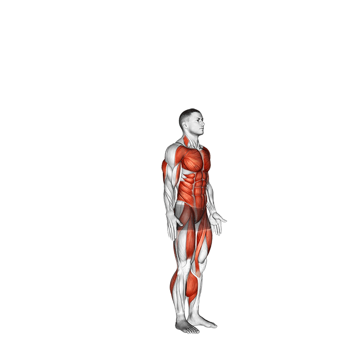

Prancha
Fortaleça o core e a resistência com a prancha.
- Posicione-se no chão, com os cotovelos apoiados.
- Mantenha o corpo alinhado e o abdômen firme.
- Segure a posição por 30 segundos a 1 minuto.
Afundo
Fortaleça as pernas e glúteos com o afundo.
- Dê um passo à frente, flexionando o joelho.
- Mantenha o tronco reto e retorne à posição inicial.
- Repita com a outra perna.

Burpee
Melhore seu condicionamento físico com burpees.
- Inicie de pé, desça ao chão e faça uma flexão.
- Suba e dê um salto ao final.
- Repita por 10 a 15 repetições.
Agachamento
Fortaleça as pernas e glúteos com o agachamento.
- Fique de pé com os pés na largura dos ombros.
- Flexione os joelhos e os quadris como se fosse sentar em uma cadeira.
- Desça até os quadris ficarem paralelos ao chão e retorne à posição inicial.
Flexão de Braços
Fortaleça o peito, ombros e tríceps com a flexão.
- Deite-se de barriga para baixo, com as mãos na largura dos ombros.
- Flexione os cotovelos até o peito quase tocar o chão e depois estenda os braços.
- Repita o movimento por 10 a 15 repetições.

Elevação de Quadril
Fortaleça os glúteos e a parte inferior das costas.
- Deite-se de costas, com os joelhos flexionados e os pés no chão.
- Levante o quadril até que o corpo forme uma linha reta dos ombros aos joelhos.
- Segure por 2 segundos e retorne à posição inicial.
Abdominal Crunch
Fortaleça o abdômen com os abdominais crunch.
- Deite-se de costas com os joelhos flexionados.
- Eleve o tronco em direção aos joelhos, contraindo o abdômen.
- Retorne lentamente à posição inicial.
Flexão de Panturrilha
Fortaleça as panturrilhas com este exercício.
- Fique em pé, com os pés na largura dos ombros.
- Suba nas pontas dos pés e segure por 2 segundos.
- Desça devagar até os pés ficarem completamente no chão.